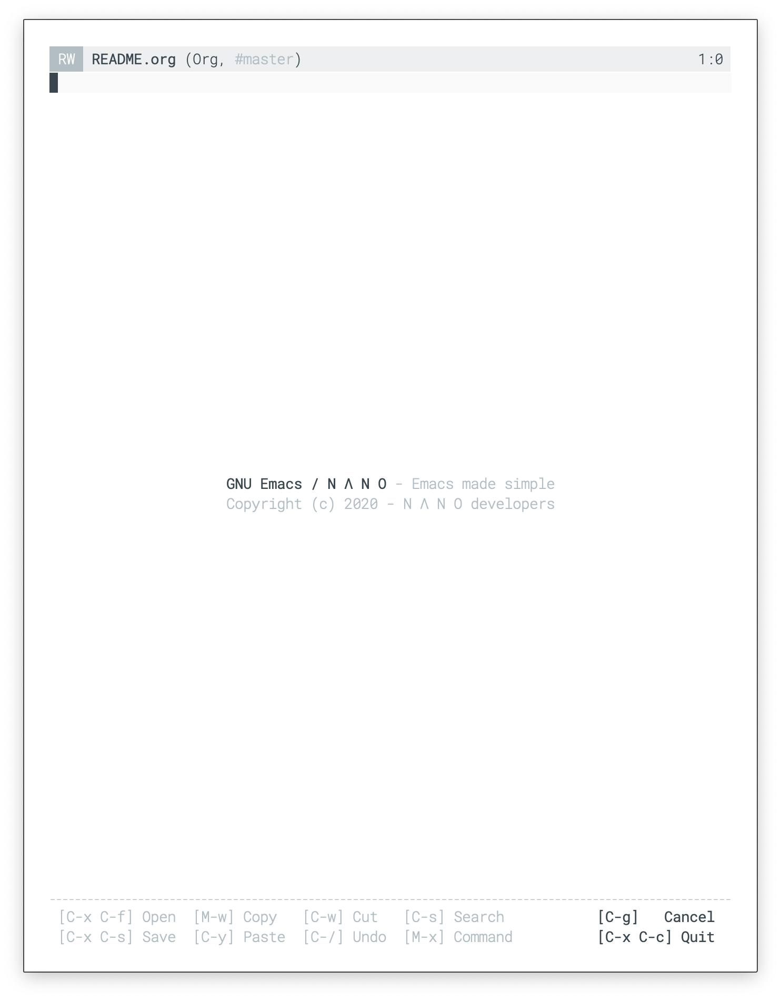
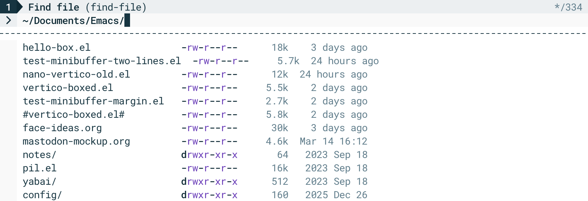
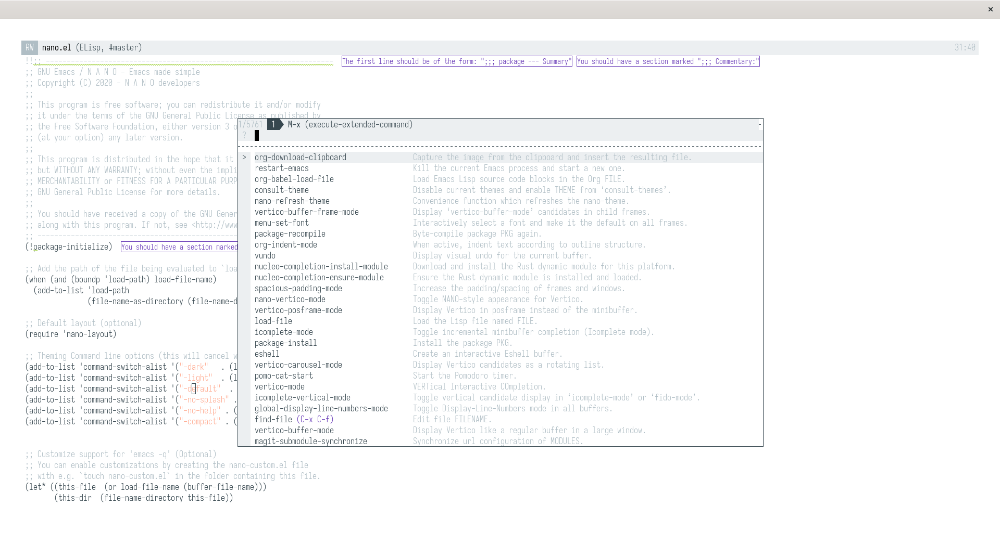
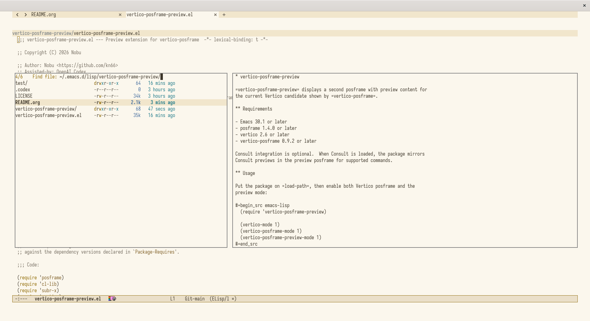

emacsのシンプルなテーマ。極限まで無駄を削ぎ落としたミニマルで洗練された外観が特徴。editorとしてnanoがあるがそれとは別。
nano-emacs
https://github.com/rougier/nano-emacs
白をベースとしたシンプルなテーマ。 reditとかで結構使ってる人見る
On the design of text Editorsという論文の原則を元にデザインされているらしい。
modelineが上部に配置され、情報も最低限になっている。

基本的にはテーマが設定されるだけなので、既存の設定と合わせて使うことができる。 Moduleとしても提供されているので、必要なもののみを有効にするという運用も可能
use-package, straightだと以下のように設定できる
(use-package nano
:ensure t
:straight (nano :type git :host github :repo "rougier/nano-emacs")
:config
;; fontやsizeの設定
;; (setq nano-font-family-monospaced "Roboto Mono Light 14")
;; (setq nano-font-size 12)
)nano-vertico
nanoのデザインに合わせたminibufferのテーマ。nanoを使うのであれば入れたほうがかっこいい
https://github.com/rougier/nano-vertico

use-package, straightだと以下のように設定できる (vertico入っている前提)
(use-package nano-vertico
:ensure t
:after (nano vertico)
:straight (nano-vertico :type git :host github :repo "rougier/nano-vertico")
;; :custom
;; カーソルは以下のようにカスタマイズ可能
;; (nano-vertico-symbols '(
;; (pill-left . "")
;; (pill-right . ">>")
;; (selection . ">")
;; (line . ?╴)
;; ))
:config
(nano-vertico-mode 1)
)vertico-buffer-frame
minibufferを画面の中央全面に表示できる。
nanoのテーマを踏襲しつつ設定可能。かっこいい

https://github.com/kn66/vertico-buffer-frame
use-package, straightだと以下のように設定できる
(use-package vertico-buffer-frame
:ensure t
:after (vertico nano-vertico)
:straight (vertico-buffer-frame :type git :host github :repo "kn66/vertico-buffer-frame")
:custom
;; (vertico-buffer-frame-consult-preview nil) ;; preview off
(vertico-buffer-frame-golden-ratio-scale 1.2)
:config
(vertico-buffer-frame-mode)
)vertico-posframe-preview
vertico-buffer-frameと同様に、minibufferを画面の中央全面に表示できる。 左側にminibufferの内容、右側にpreviewが表示される。
vertico-buffer-frameかこちらか好きな方を使うのが良い。 ただし、nano-verticoと併用する場合、追加の設定が必要

https://github.com/kn66/vertico-posframe-preview
所感
nanoのテーマは洗練されてて良い。なんかおしゃれでかわいい。コントラストの低さも最初は戸惑うが徐々になれてくる。 ただしばらく使ってるとmodelineにlspのON/OFFやflymake状態など欲しくなる。
minibufferが全面に出てくるのはかっこいいけど、minibufferで入力しつつ別のbufferで操作する系(embark actなど)を使う場合、 後ろが見えなくなり設定変えるのが面倒…